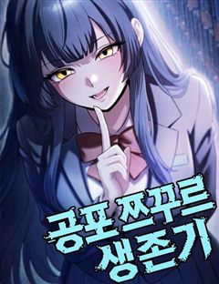
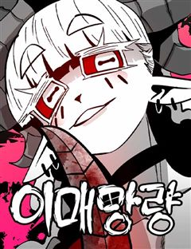
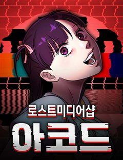
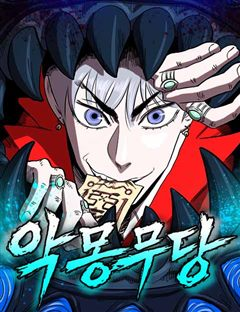
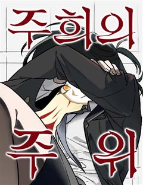
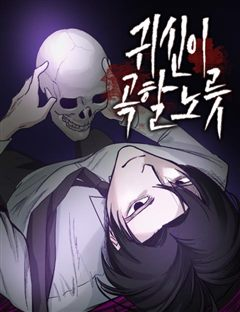
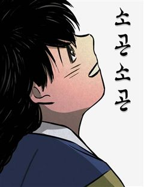
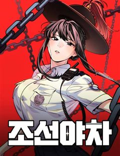

미래의 골동품 가게 같은 웹툰 추천

미래의 골동품 가게 · 구아진
미래의 골동품 가게 재밌게 봤다면 이 웹툰들도 좋아할 거예요. 같은 장르이면서 괴담, 오컬트판타지, 신화 같은 요소가 겹치는 작품을, 겹치는 요소가 많은 순서로 20개 골랐어요.
2026-10-11 기준 · 네이버웹툰·카카오웹툰·레진코믹스 · 성인 작품 제외
내 취향으로 직접 골라 추천받기 →-
1

네이버웹툰공포 쯔꾸르 생존기
전설의 공포게임 [비현실]을 실행한 순간 게임 속에 갇힌 이현. 한밤중의 학교에서 눈을 뜬 그는 의문의 여고생 다연과 만난다. 이곳에서 살아남는 방법은 단 하나, 섬뜩한 퍼즐을 풀고 숨겨진 규칙을 찾아낼 것. 과연 두 사람은 죽음의 게임을 끝내고 현…
괴담오컬트판타지오컬트크리처판타지스릴러·공포네이버웹툰에서 보기 → -
2
 네이버웹툰
네이버웹툰원주민 공포만화
끝날 때까지 끝난 것이 아니다! 마지막까지 방심할 수 없는 다양한 에피소드. 당신의 상상을 뛰어넘는 본격 반전 공포 스릴러가 온다!
괴담오컬트판타지오컬트서스펜스판타지스릴러·공포네이버웹툰에서 보기 → -
3

네이버웹툰이매망량
사람을 해치는 악귀 이매망량이 본격적으로 활개를 펼치기 시작한 조선, 전 국토 곳곳에 고통과 신음이 끊이질 않는다.
오컬트판타지신화오컬트크리처판타지네이버웹툰에서 보기 → -
4
 네이버웹툰
네이버웹툰귀촌리
평범한 시골 마을 '귀촌리'를 찾은 '허무명'. 그는 돌아가신 할머니의 빈 집에 조용히 숨어든다. 그런데 집이 이상하리만큼 깔끔하다. 할머니가 돌아가신 건 3년 전인데? 어쩐지 마을 사람들은 이방인 무명의 방문을 달가워 하는 것 같지 않다. 아니,…
괴담오컬트시리어스서스펜스스릴러·공포네이버웹툰에서 보기 → · 귀촌리 같은 웹툰 → -
5
 네이버웹툰
네이버웹툰염라강림
지옥이 망했다. 피가 흘러야 할 황천에는 맑은 물이 흐르고 망자들을 끓이던 솥은 차갑게 식은지 오래다. 은퇴한 염라대왕은 자신의 행복을 위해 윤회의 길을 택하고자 하지만, 혼란스러워진 지옥과 사라진 자신의 후임 털보로 인해 윤회의 길을 걸을 수 없게…
신화오컬트동양풍판타지동양판타지네이버웹툰에서 보기 → -
6
 네이버웹툰
네이버웹툰멸귀수도전
"내 복수는 요귀를 절멸시켜야 끝나는 거야." 부모를 죽인 요귀를 잔혹하게 효수한 이후, 마을에서 괴물이라고 손가락질 받던 소년 '이세'. 삶에 더 이상 미련이 없던 '이세'는 도깨비이자 요귀사냥꾼인 '몽련'을 만나 세상에서 요귀를 절멸시키겠다는 목…
오컬트판타지동양풍판타지크리처동양판타지네이버웹툰에서 보기 → -
7

네이버웹툰로스트 미디어샵 아코드
'잊혀진 매체'라는 뜻을 가진 '로스트 미디어'. 아코드는 그런 로스트 미디어를 사람들에게 선보이는 가게이다. 아코드의 아리따운 점원 '리카'는 손님들이 찾는 로스트 미디어를 다시금 그들 앞에 선보인다. 하지만 잊혀진 것에는 잊혀진 이유가 있다고 했…
괴담오컬트크리처스릴러·공포네이버웹툰에서 보기 → -
8
 네이버웹툰
네이버웹툰사람의 탈
탈은 예술, 춤은 무술! 천대받는 탈춤광대 ‘봉산’은 스승이 남긴 지도를 따라 왕이 되려는 괴물 호랑이 ‘사풍흑호’를 막기 위해 전설 속의 '사람의 탈'을 찾아 모험을 떠나게 되는데 …
오컬트동양풍판타지크리처동양판타지네이버웹툰에서 보기 → -
9

네이버웹툰악몽무당
대한민국 최고의 무당 범구는 그가 모시는 무영장군신의 죽음으로 한순간에 나락에 떨어진다. 신을 부활시킬 방법은 단 하나, “무당이여! 살인사건 트라우마로 들어가 악귀를 처단하라.” 최악의 피해자들을 구원함으로써, 무당 범구는 스스로를 구원할 수 있을…
오컬트판타지시리어스서스펜스판타지스릴러·공포네이버웹툰에서 보기 → -
10
 네이버웹툰
네이버웹툰괴이현상 하나
괴이현상 규칙 하나, ?̵̡͖̺̮͚̱͚̿͛̋͌̑͡?̢̨̲̤̞͙̟̌̏́̒̔̎̅͌͠͝?̴̰̭̭͉̬͙̲̄̀̐̿͐͋͛͡͠?̧͖͈̮̞̯̯̟̲̒̏̒͘͘͠을 잊지 마세요. 괴이현상 규칙 둘, 중심부 ?̭̠͙̖̹̪͎͗̒̒̋͒͠?̸̫͈̯͉̝̰͇́̒̀̏́͂͛͟͠을 찾…
괴담크리처시리어스스릴러·공포네이버웹툰에서 보기 → -
11
 네이버웹툰
네이버웹툰기생번식
스릴러 대가 <꼬리잡기> 바쉬 작가 신작. 근원을 알 수 없는 기이한 현상을 겪게 된 세 사람. 덕분에 세 사람은 원하던 모든 것을 얻게 되지만… 처음엔 즐거움만 선사하던 그것이 점점 그들의 일상, 그들의 생사까지 지배하려 한다는 사실을 깨닫는다.…
괴담오컬트판타지판타지스릴러·공포네이버웹툰에서 보기 → -
12
 네이버웹툰
네이버웹툰달로 만든 아이
어린 시절부터 남들이 보지 못하는 존재들을 볼 수 있던 '박하'. 평생을 외롭게 살아온 박하는 18살이 되던 해, 처음으로 자신과 같은 것을 볼 수 있는 '진도'와 그의 친구들을 만나게 된다. 어느 날, 진도를 통해 박하가 과거에 영물들을 군림했던…
괴담오컬트판타지오컬트판타지네이버웹툰에서 보기 → -
13
 네이버웹툰
네이버웹툰맹종
만신인 할머니가 봉인해둔 뱀신, 진을 해방시킨 어린 화림은 진에게 몸을 빼앗기고, 화림을 살리기 위해 할머니는 자신의 목숨을 내놓는다. 세월이 흘러 고등학생이 된 화림은 아직까지도 자신을 끊임없이 찾고 있는 진을 피해 살고 있다. 그러던 어느 날,…
오컬트판타지오컬트판타지스릴러·공포네이버웹툰에서 보기 → -
14

네이버웹툰주희의 주위
유령을 볼 수 있는 민이. 그리고 민이와 어릴 적 둘도 없는 친구 사이였던 주희. 민이는 주희와 있을 때면 유령을 보지 않았고 덕분에 평범하게 성장했지만, 원인 모를 사고로 주희는 어린 나이에 세상을 떠났다. 분명 그런 줄 알았는데... 고등학교에서…
오컬트시리어스서스펜스스릴러·공포네이버웹툰에서 보기 → -
15
 네이버웹툰
네이버웹툰0의 온도
고1때부터 자신을 따라다니던 영혼 '0'과 사랑에 빠진 민경희. 그녀는 성인이 되자마자 '0'과 영혼결혼식을 올리고, '0'이 머물 수 있는 '몸'을 만들어 주기로 약속한다. 그러나 만질 수 없는 것을 탐하게 된 대가가 따르는데...
오컬트판타지오컬트판타지스릴러·공포네이버웹툰에서 보기 → -
16

네이버웹툰귀신이 곡할 노릇
결혼정보회사를 통해 만난 완벽한 남자 권실원. 모두가 그를 좋아하지만, 정작 결혼을 약속한 이인해는 권실원을 두려워한다. 그의 완벽한 집착이 말 그대로 선을 넘었기 때문이다.
오컬트판타지오컬트판타지스릴러·공포네이버웹툰에서 보기 → -
17

-
18
 네이버웹툰
네이버웹툰종말에서 살아남기
평생 지하실에 감금되어 훈련받은 소년. 그리고 그를 가둔 미치광이 아빠가 하는 말 "종말이 온다." 지금껏 수없이 반복해온 훈련과 생존 지식으로 종말에서 살아남아야만 한다.
크리처시리어스서스펜스판타지스릴러·공포네이버웹툰에서 보기 → -
19

네이버웹툰조선야차
"조선의 개가 되어라, 어명이다." 한순간에 깨진 평화. 왕의 부름에 야차가 된 두 사람, 얘네한테 조선의 운명을 맡겨도 되는걸까...?
동양풍판타지크리처동양판타지네이버웹툰에서 보기 → -
20
 네이버웹툰
네이버웹툰붉은 이정표
세상의 평화를 유지하던 최강의 도깨비 집단 '홍혜.' 그러던 어느 날 동료의 배신으로 도깨비 '린'은 홍혜와 친구들 모두를 잃게 된다. 분노로 가득 찬 그는 홍혜의 최강전력 '검은 귀신' 으로서 복수를 향해 길을 떠난다.
동양풍판타지시리어스동양판타지네이버웹툰에서 보기 →